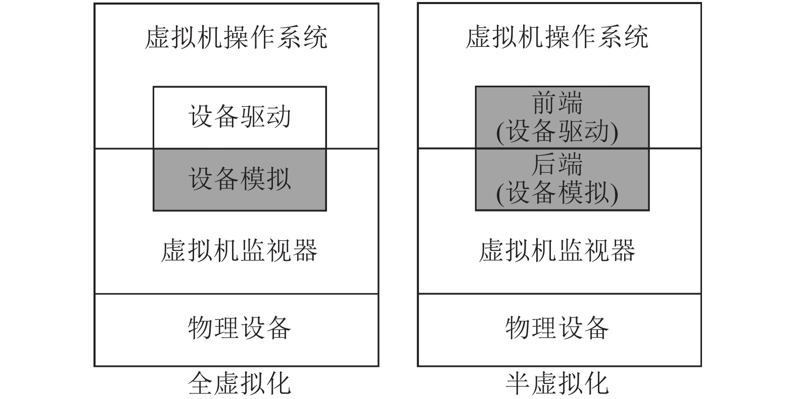
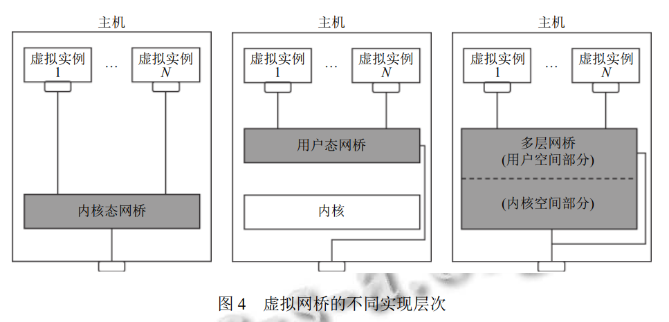

网卡虚拟化
- 网卡虚拟化在云环境下必不可少, 其核心是为各虚拟实例构建虚拟网卡和虚拟网桥等虚拟网络设备, 将各虚拟实例的数据传输和网络管理连接到外部的物理网络.
- 虚拟网络一般需要通过物理网卡进行网络通信。
- linux系统中，虚拟网卡和物理网卡之间可以通过网络桥接（bridge）（虚拟交换机）来实现通信。
- 网络桥接可以将多个网卡连接起来，形成一个网络交换机的功能，将数据包转发到目标网卡，从而实现虚拟机与外部网络的通信。
- 其他将物理网卡和虚拟网卡连接起来的方式
- 虚拟局域网VLAN
- NAT网络地址转换
虚拟机网络连接模式
桥接
- 桥接网络是指 本地物理网卡和虚拟网卡通过 VMnet0 虚拟交换机进行桥接，物理网卡和虚拟网卡在拓扑图上处于同等地位，那么物理网卡和虚拟网卡就相当于处于同一个网段，虚拟交换机就相当于一台显示网络中的交换机，所以两个网卡的IP需要设置成同一个网段
- 所以当我们要在局域网使用虚拟机，对局域网其他pc提供服务时，例如提供ftp，提供ssh，提供http服务，那么就要选择桥接模式。
- 虚拟机需要访问外网的时候，需要配置子网的网关（路由器地址），并且需要配置dns 解析服务器。
NAT
- NAT模式，就是使虚拟机 能借助NAT（网络地址转换）功能，通过宿主机器所在的网络来访问公网。
- NAT模式中，虚拟机的网卡和物理网卡的网络不在同一个网络中，也就是说没有连到虚拟交换机上。虚拟机的网卡，是vmware提供的一个虚拟网络。
NAT与桥接的比较
- NAT模式和桥接模式虚拟机都可以上外网
- 由于NAT的网络在vmware提供的一个虚拟网络里，所以局域网其他主机是无法访问虚拟机的，而宿主机可以访问虚拟机（一个机器内可以互通），虚拟机可以访问局域网（相当于宿主机访问）的所有主机，因为真实的局域网相对于NAT的虚拟网络，就是NAT的虚拟网络的外网。（虚拟机-其他主机 单向通信）
- 桥接模式下，多个虚拟机之间可以互相访问；NAT模式下，多个虚拟机之间也可以相互访问。
Host-Only
- 在Host-Only模式下，虚拟网络是一个全封闭的网络，它唯一能够访问的就是主机。其实Host-Only网络和NAT网络很相似，不同的地方就是Host-Only网络没有NAT服务，所以虚拟网络不能连接到Internet。主机和虚拟机之间的通信是通过VMware Network Adepter VMnet1虚拟网卡来实现的。
- Host-Only的宗旨就是建立一个与外界隔绝的内部网络，来提高内网的安全性。这个功能或许对普通用户来说没有多大意义，但大型服务商会常常利用这个功能。如果你想为VMnet1网段提供路由功能，那就需要使用RRAS，而不能使用XP或2000的ICS，因为ICS会把内网的IP地址改为192.168.0.1，但虚拟机是不会给VMnet1虚拟网卡分配这个地址的，那么主机和虚拟机之间就不能通信了。
网卡虚拟化的分类
基于硬件的虚拟化
基于硬件的网卡虚拟化方法让虚拟机或容器直接使用物理网卡，不用经过软件虚拟层。
- 设备直达和SR-IOV
- 设备直达
- 在虚拟机中，物理网卡可以通过PCI透传技术分配给虚拟机，供虚拟机独占使用。PCI透传技术需要VT-d或IOMMU等硬件支持, 其作用是将PCI设备地址空间映射到客户虚拟机中。
- 独占性和性能： PCI透传技术确保单个虚拟机可以独占使用一个物理网卡设备，从而实现了虚拟机间的网络隔离。这也保证了该虚拟机获得与原生网卡相当的性能。然而，这种独占性也限制了网卡设备无法被多个虚拟机共享使用，这对于需要多个虚拟机间共享网络资源的场景不太适用。
- 宿主机控制和迁移： PCI透传技术的使用会限制宿主机对物理网卡的管控能力，因为这些网卡被直接分配给了虚拟机。另外，虚拟机在迁移过程中，由于网卡设备的独占性，需要重新配置相应的物理网卡接口，这可能增加管理和配置的复杂性。
- SR-IOV
- 在设备直达的基础上，解决了多个虚拟示例无法共享物理网卡的问题。
- SR-IOV从一个物理网卡设备虚拟出多个接口, 各虚拟实例可以分别使用各个接口。
- 一个具备SR-IOV功能的物理网卡, 都可提供一个PF及多个VF, 其中VF的数量与具体网卡的硬件资源相关（VF能控制自身的配置资源）
- 理网卡的硬件资源限制了VF数量, 因此, 仅使用SR-IOV难以适应大规模虚拟实例的场景
基于软件的虚拟化
- 基于软件的网卡虚拟化, 在实现上更加灵活. 按照是否完全模拟网卡设备功能和硬件接口, 网卡虚拟化可以分为全虚拟化和半虚拟化. 此外, 还有针对容器的虚拟网卡, 如veth pair.
1. 全虚拟化
- 由虚拟机监视器完整模拟网卡设备. 虚拟机监视器完整实现了物理网卡设备的功能和接口, 包括网卡每条I/O请求的处理逻辑. 客户机虚拟网卡在执行任何I/O指令时, 均会陷入到虚拟机监视器. 后者将I/O指令按照既定的处理逻辑, 通过软件模拟或交给硬件进行处理. 在操作完成后, 虚拟机监视器会将结果反馈给虚拟机. 全虚拟化架构如图3所示, 虚拟机不用修改自身操作系统, 直接使用现有的物理网卡驱动就可以执行网络I/O. 全虚拟化网卡设备有QEMU e1000等.

- 全虚拟化每条I/O请求的处理路径过长, 上下文切换和数据拷贝次数过多, 导致网络I/O的性能下降, 也消耗了更多的CPU资源.
- 全虚拟化适合硬件功能简单和普遍使用的网卡类型
- 实现较为复杂，存在过多的切换和拷贝
2. 半虚拟化
- 半虚拟化技术并未完整按照原生硬件模拟设备的功能和硬件接口, 而是采用自定义功能和接口的方式. 如图3所示, 半虚拟化通过前后端框架的协作来完成网络I/O功能的模拟. 其中, 后端在位于虚拟机监视器层, 作为一个可定制的I/O设备; 前端位于客户机中, 视为后端设备的特有驱动. 前后端通过共享队列、特征协商和事件通知等机制为客户机提供高性能与定制化的I/O功能.
- 将驱动和硬件设备都模拟出来，完成自定义的功能。
虚拟网桥

内核态网桥
- 虚拟网桥的功能完全在内核态实现，如linux Bridge
- 各个虚拟网卡在桥接虚拟网桥时，会注册该虚拟网桥的处理函数。
- 数据包-> 物理网卡-> 内核协议栈 -> 虚拟网桥-> 端口转发/广播端口
用户态网桥
- 虚拟网桥的功能完全在用户态实现，如Snabb Switch.
- 用户态网桥通常与用户态网络协议栈配合使用.
多层网桥
- 虚拟网桥的功能由内核模块和用户空间守护进程共同完成.
数据包处理方法
- 隧道网络
- 隧道网络, 都需要对原始的虚拟网络数据包进行封装, 导致物理网络中的有效数据负荷降低. 其次, 除数据拷贝开销以外, 封装和解封的过程也存在开
销, 在消耗 CPU 的同时也引入了更多网络延迟.
- 路由转发
- 各虚拟实例的数据包经过虚拟网卡到达虚拟网桥后, 根据配置的路由转发规则, 可以在 3 层网络进行转发并传输到终端主机,同样地, 数据包在终端主机同样根据路由规则转发给对应虚拟实例的网卡接口.
- NAT
- NAT, 即网络地址转换. NAT 技术构建虚拟网络的 IP 和端口与物理网络地址之间的映射关系, 当虚拟网络数据包到达虚拟网桥后, 按 NAT 规则将虚拟数据包的虚拟地址转换成对应的物理地址, 然后经物理网络发送到终端主机. 终端主机同样可以根据 NAT 完成对等转换, 实现虚拟实例跨主机互通. NAT 技术和上述的路由转,不同, 不需要交换各个节点的路由信息,仅需维护本地 NAT 规则. 在 Linux 系统中, 用户可以通过 iptables 配置 NAT 规则, 虚拟网络数据包经过主机内核协议栈时, 将完成网络地址转换.
转载请注明来源，欢迎对文章中的引用来源进行考证，欢迎指出任何有错误或不够清晰的表达。可以在下面评论区评论，也可以邮件至 1065016533@qq.com